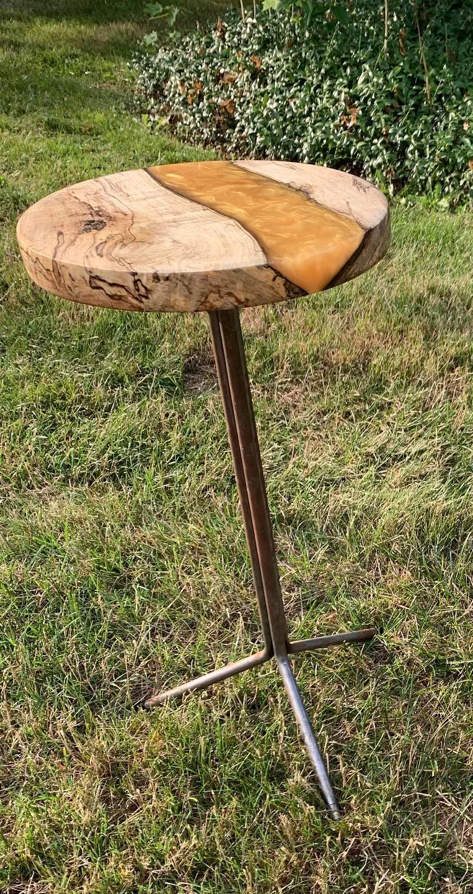
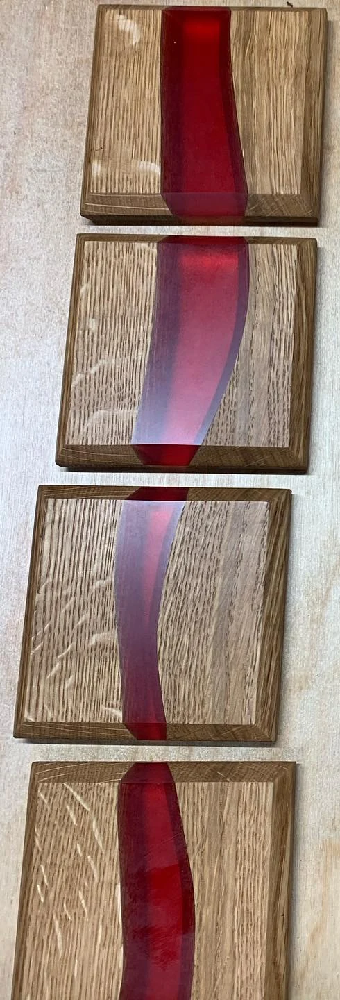
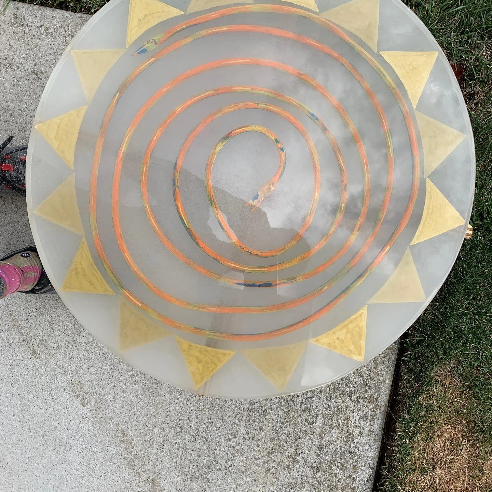
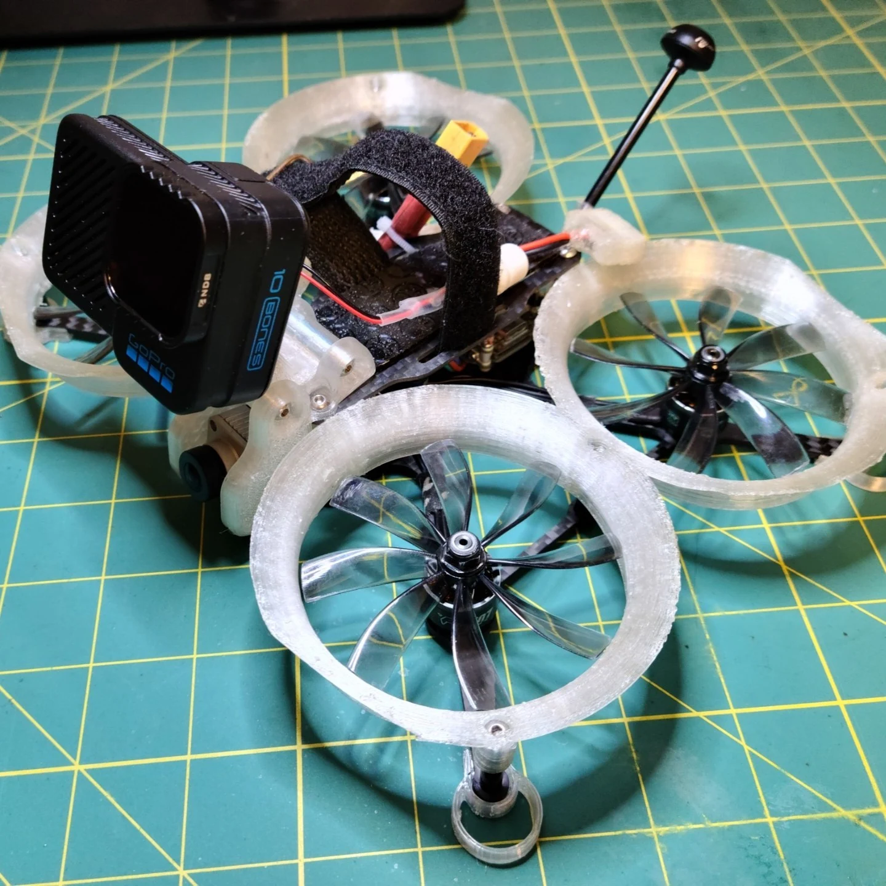
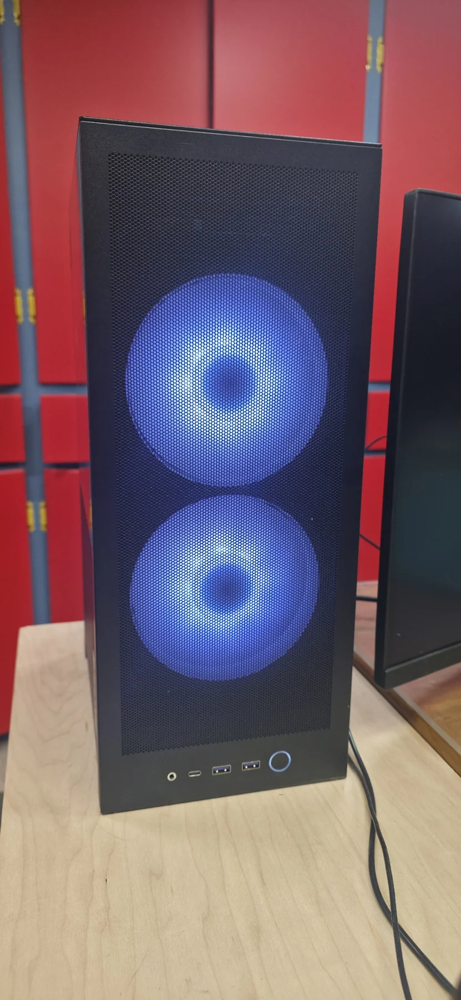

01 / 9 entries
The martini-table collection →
Color, timber, river geometry, and finish change from table to table.
Gold & spalted maple / Multicolor river, walnut banks / An iridescent river
ONE BODY OF WORK, DIFFERENT WAYS IN
Follow a family of projects and compare individual pieces, variations, and development over time.
Browse every entry →
01 / 9 entries
Color, timber, river geometry, and finish change from table to table.
Gold & spalted maple / Multicolor river, walnut banks / An iridescent river

02 / 9 entries
Specific commissions, pattern variations, batches, and functional details stay visible. Series records are labeled separately from individual pieces.
Walnut, framed in purpleheart / One brief. Two sides. / An RV sink, with a second job

03 / 5 entries
Each set has its own shape, color, and place in the collection.
A red river in oak / Blue, in the round / A narrow blue line

04 / 6 entries
Earlier setups, later builds, and published modifications are kept distinct. Configuring a platform and designing a modification are different contributions.
Ender 3 V2 & OctoPrint / Voron V0.2 build / EffZero: the build and the parts

05 / 7 entries
Room layouts, furniture, enclosures, built spaces, and design studies.
The basement, opened up and built out / Basement bathroom: from Fusion to a real room / Basement interior in SketchUp

06 / 5 entries
Circular pieces, irregular tops, trays, and material experiments.
Copper spiral & geometric resin / An edge that does not need straightening / Cottonwood, a dark river, and crystal clarity

07 / 3 entries
The ducted camera build, the 6S experiment, and the LEGO-themed aircraft each get their own record.
Shendrones Squirt cinewhoop / Player1: moving to 6S / LEGO-themed FPV build

08 / 2 entries
Separate computers, configurations, and assembly photographs, from the first custom setup to the recent compact machine.
A compact PC, from the inside out / The first custom PC setup

09 / 7 ENTRIES
Replacement components, jigs, fixtures, and workshop infrastructure. Start with the tool fork that moved from Fusion to the CNC tool rack.
Multicam tool fork / router sled / clamping fixture
BEYOND THE PHOTOGRAPHS
The file index collects existing GitHub parts and software source collections.
Open the file archive →3D MODEL LIBRARY
FPV aircraft, printer hardware, workshop fixtures and everyday repairs.